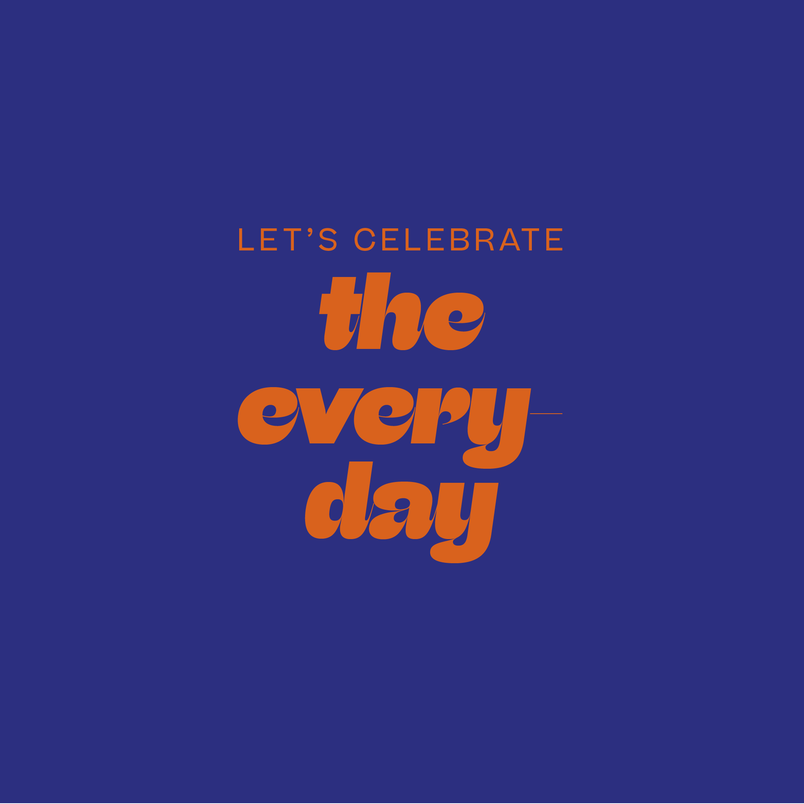
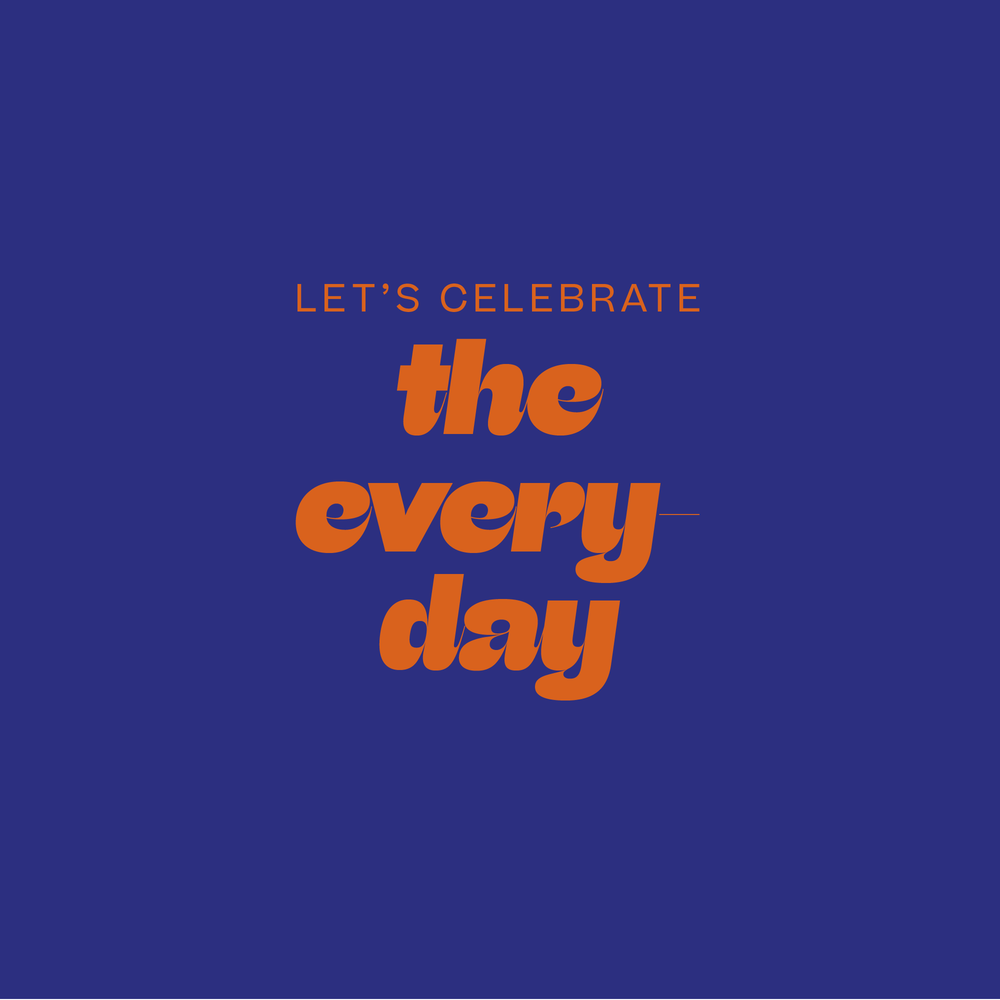

Araw-araw’s core values emphasize consciously and consistently pursuing your passions; slowly and steadily working towards your goals; and recognizing your triumphs, big or small.
The modern day planner—in all its 21st century glory—has been a staple for young professionals in every field and industry. Daily planners, however, have come to always prioritize the never-ending roster of things to do. While we all want to stay on top of our to-do-lists, there should also be a way to put things in the right balance, to have our personal projects and goals come to the fore.
STARTING WITH THE DETAILS
The Araw-araw planner was born out of the idea that we can make time for our passions and interests, one day at a time. We conducted a survey among a mix of students and employees whose hobbies ranged from physical activities like yoga to more creative pursuits such as producing music. When asked what makes it difficult for them to enjoy their hobbies, the top two responses were being busy with work and mismanaging their time. More than half of the respondents said they already regularly use a paper and/or digital planner. We saw the need for a different kind of planner that would encourage and guide these busy bees to pursue their passions, one day at a time.